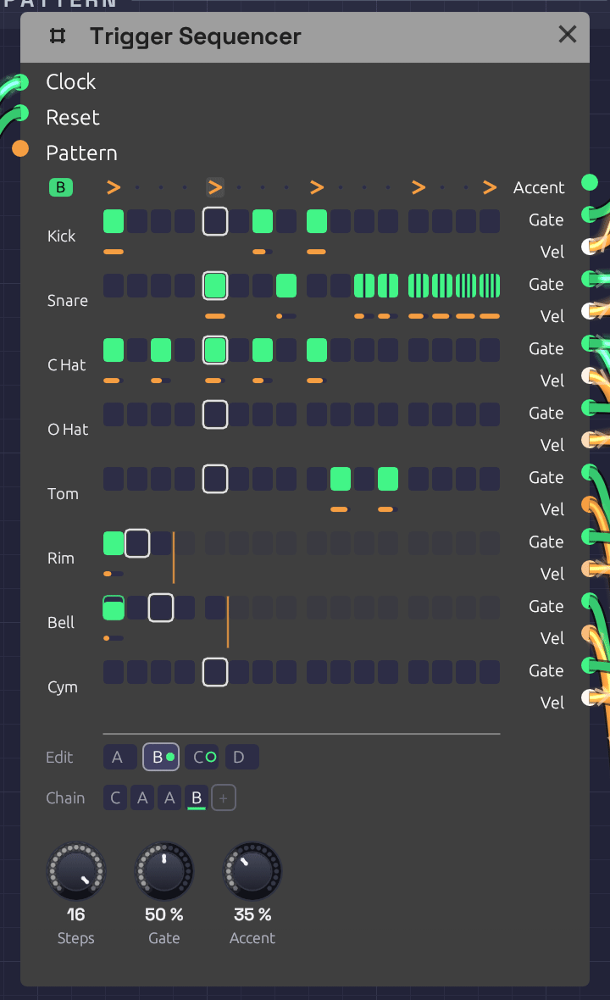

Trigger Sequencer
Module ID seq.trigger · Category Utility

Pattern B of the Roll Call example, playing: a fill whose snare roll splits into ratchets, two, then three, then four hits a step. Each lane sits beside its own Gate and Vel jacks. The rim loops every 3 steps and the cowbell every 5, and the orange lines mark where they turn round. The Chain plays C A A B, and C, ringed, comes next.The Trigger Sequencer is a drum machine's sequencer. It has eight lanes of sixteen steps, and each lane has its own Gate and Vel output, so one module plays a whole kit: patch each lane into a Drum. It holds four patterns, A to D, and plays them in the order its Chain gives, so A A A B is a groove with a fill every fourth bar. Each step can play only some of the time, or roll two to four hits across its length.
Where the Step Sequencer plays a melody, one note at a time, the Trigger Sequencer plays rhythm, many hits at once. It has no pitch.
Inputs
| Port | Signal Type | Description |
|---|---|---|
| Clock | Gate (Green) | Each rising edge plays the next step |
| Reset | Gate (Green) | A rising edge starts over: the next clock plays step 1 of the Chain's first pattern |
| Pattern | Control (Orange) | Picks the pattern for each new bar in place of the Chain: 0 to 0.25 is A, 0.25 to 0.5 is B, then C, and D from 0.75 up |
Outputs
| Port | Signal Type | Description |
|---|---|---|
| Accent | Gate (Green) | A gate on every accented step, whichever lanes play on it |
| Gate 1 – Gate 8 | Gate (Green) | Each lane's hits. Patch into a Drum's Trig, or an envelope's Gate |
| Vel 1 – Vel 8 | Control (Orange) | The velocity of the lane's last hit, 0 to 1, raised on accented steps. It holds until the lane's next hit. Patch into a Drum's Accent |
Parameters
| Control | Range | Default | Description |
|---|---|---|---|
| Steps | 1 – 16 | 16 | How many steps make a bar. The pattern changes, and the Chain moves on, only where a bar starts |
| Gate (Gate Length) | 1 – 100% | 50% | How long each gate stays high, as a share of its step, or of its share of the step in a ratchet |
| Accent (Accent Amount) | 0 – 100% | 50% | How far an accented step raises every lane's velocity toward full |
Each pattern also stores, for every lane and step, whether the step plays, its velocity, its probability and its ratchet. It also stores an accent row. Each lane has a length, and the Chain has up to eight bars. The grid, the tabs and the Chain under it edit all of these, and patches save them.
Programming a beat
Each lane is drawn on the two rows its jacks hang from. Pads sit on the Gate row, and each hit's velocity is an orange bar on the Vel row below. A lane is named after what its Gate cable plays: a Drum's type (Kick, Snare, C Hat, …), or the name of the module it feeds. A lane with nothing patched shows its number.
- Click a pad to add a hit, or take it away. A new hit plays at 80%, so an accent has room above it.
- Drag a pad up or down to set its velocity. Dragging an empty pad adds a hit at the velocity you drag to.
- Shift + click steps the ratchet through ×1, ×2, ×3 and ×4. A ratcheted pad splits into slivers, one per hit.
- Ctrl + click steps the probability through 100, 75, 50, 25 and 10%. A pad that only sometimes plays is outlined and filled only as far as its chance.
- Alt + click ends the lane at that step, so it loops on its own length (see Polymeter). Alt + click the last step again and the lane follows the bar.
- Right-click a pad for all of these in a menu.
- Right-click a lane's name to set its length from a grid of 1 to 16, or to clear the lane in this pattern.
- Click a step on the top row to accent it. Notation's accent mark, >, shows on accented steps.
Steps past the end of a lane fade. Each one keeps its settings for when the lane grows again.
Every click, and every drag, is one step of undo, with a name that says what it did ("Ratchet ×3 on Snare step 14 of B"). Fast clicks on the grid don't run together.
While the patch plays, each lane's current step has a white outline, and a pad lights as it fires. The outline is faint while the grid shows a pattern other than the one playing.
Patterns and the Chain
The tabs under the grid pick which pattern you're editing. The one playing wears a green dot, and the one coming next a green ring. Which tab is open is the editor's choice: it isn't saved with the patch, and it isn't an edit. Right-click a tab to copy its pattern to another, which is the quick way to start a fill from the groove, or to clear it.
The Chain is the order the patterns play in, a bar each, round and round. The bar playing is underlined.
- Click a bar to change its pattern: A, B, C, D, then A again.
- Right-click it to pick a pattern, or to remove the bar. The bars after it move up.
- + adds a bar of the pattern you're editing to the end. The Chain holds up to eight.
A new Trigger Sequencer plays A. For a fill every fourth bar, write the groove in A, copy it to B, change B's last few steps, and make the Chain A A A B. Every pattern change lands on a bar line, counted from the same clock as the steps, so the fill never drifts, however long the patch runs.
Pattern CV
With a cable in Pattern, the CV picks the patterns instead, and the Chain dims. The CV is read once a bar, as the bar starts, so a pattern change always waits for the next bar line. A Clock Divider's Gate through an Attenuverter can switch to a fill on a phrase of its own, and an LFO or Sample & Hold can wander between patterns.
Timing
The clock
The sequencer has no tempo of its own. Each rising edge at Clock plays the next step, so a Clock at 1/16 plays sixteenths, and its swing carries through.
Gate is a share of the step, which the sequencer measures from the clock, as the Step Sequencer does. On a swung clock, each step's gates are a share of that step, long or short. A Drum only listens for the rise of its trigger, so for drums Gate hardly matters. Envelopes care.
When a hit lands while its lane's gate is still high, the gate drops for one sample first, so every hit starts with a rising edge.
Ratchets
A ratchet plays 2, 3 or 4 hits, evenly spaced across the step: ×3 on a sixteenth at 120 BPM is three hits 41.7 ms apart. The spacing comes from the measured step, so ratchets follow the tempo. On a swung clock, a step that runs long spreads its hits wider than a short one. Each hit has the step's velocity, and a gate that's Gate of its share of the step. The next clock ends any hits still to come.
Before the sequencer has seen two clock pulses it can't measure a step, so for the very first step it assumes a sixteenth at the patch's tempo (120 BPM if nothing sets one).
Probability
A step with a probability below 100% rolls the dice each time its turn comes. If it plays, all of its ratchet's hits play. The dice fall the same way every time you press Play, so a take you liked can be played again.
Accents
An accented step raises the velocity of every lane that plays on it, part of the way to full: at 50% Accent, a 60% hit plays at 80%, and a 100% hit stays at 100%. At 0% the accent row does nothing to the velocities. Accent also fires its own gate on every accented step, for anything else that should hear it: a filter's envelope, say, or a VCA.
Polymeter
A lane left at its default follows the bar. Give a lane its own length and it loops that many steps however long the bar is. A lane 3 steps long against a 16-step bar plays a figure of three over a bar of four, and the two only line up again after 3 bars. Two lanes of 3 and 5 against 16 meet the bar again after 15 bars.
The bar and every lane count the same clock, so they drift against each other only on purpose. Reset starts them all together again.
How patches store it
Every step is one parameter, named for its pattern, lane and step: Step A1 01 is pattern A, lane 1, step 1. Its value reads as digits, ratchet, probability, velocity, and it's negative while the step is off:
| Value | Step |
|---|---|
1100080 | One hit, always, at 80% |
3050100 | Three hits, half the time, at 100% |
-1100080 | Off. Click it and it plays one hit, always, at 80% |
An off step keeps its settings, so turning it off and on again changes nothing else. The accent row is Accent A 01 to Accent D 16, the lanes' lengths Length 1 to Length 8 (0 follows the bar), and the Chain Chain 1 to Chain 8.
Tips
- One lane per drum. Patch Gate 1 into the kick's Trig and Vel 1 into its Accent, and so on down the kit. The lane names follow.
- A choke group. Patch the closed hat's Gate into the open hat's Choke as well as the closed hat's Trig, and a closed hat cuts an open one short.
- Ghost notes. Drop a snare hit to 25–35% velocity. Through a Drum's Accent it plays darker as well as quieter.
- Rolls. A ×2 on the last hat of a bar is a flam into the downbeat. ×3 and ×4 on the last snare hits of a fill are a press roll.
- Humanize. A few hats at 75% or 50% chance keep a loop from sounding like one.
- Two kits. A second Trigger Sequencer on the same Clock and Reset plays in lockstep with the first.
Related
- Roll Call – a full kit on one Trigger Sequencer, with a fill and crash every four bars
- Drum – the voice each lane plays
- Step Sequencer – notes rather than hits
- Clock – tempo and swing
- Clock Divider – phrases, for Pattern or Reset